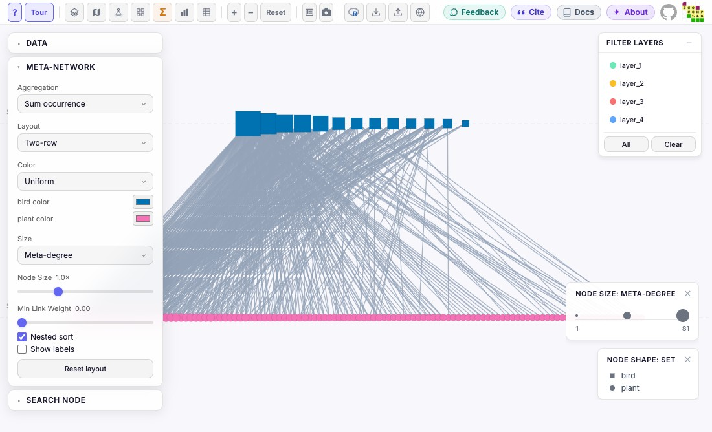

Meta-network: open the plot as the network aggregated over layers
Source:R/mira_mode.R
mira_mode_meta.RdOpens the plot in MiRA's meta-network mode: each node once, linked to the nodes it interacts with in any layer. Arguments not given keep the values MiRA uses when its meta-network button is clicked.
Usage
mira_mode_meta(
aggregation,
layout,
color_by,
size_by,
size,
min_weight,
nested,
labels,
label_size,
color,
layers
)Arguments
- aggregation
How links of different layers combine into one:
"occurrence"(MiRA's default: the number of layers with the link),"weights"(the sum of their weights) or"union"(present in any layer).- layout
"circular","force"or"bipartite"(two rows, one per node set; needsmira(..., bipartite = TRUE)). MiRA's default is"bipartite"for bipartite networks and"circular"otherwise.- color_by
Node color:
"uniform"(MiRA's default: one color),"participation"(the number of layers a node is in) or"degree"(the number of nodes it links to in the meta-network). To choose the one color, givecolorand leavecolor_byout.- size_by
Node size:
"degree"(MiRA's default),"participation"or"uniform".- size
Node size multiplier, between 0.2 and 3 (default 1).
- min_weight
Hide links with an aggregated weight below this (a number of 0 or more; default 0).
- nested
TRUE(default) orFALSE: sort each row of the bipartite layout by degree. Only for bipartite networks (an error otherwise), and only used by the"bipartite"layout (a warning with another layout).- labels
TRUEto show node names (defaultFALSE).- label_size
Size of node names in pixels, a whole number between 8 and 24 (default 12).
- color
One color for every node, or one per node set, named by
node_type(e.g.c(bird = "orange", plant = "darkgreen")). A color makes the node color uniform, so givecolor_byorcolor, not both (also notcolor_by = "uniform"withcolor): a latercolorreplaces an earliercolor_by, and the other way round.- layers
Layers to select in the meta-network's Filter Layers panel: nodes and links not in them are dimmed (not removed, and the meta-network is not recomputed). Layer names, or a condition on the columns of
net$layersevaluated likesubset()(e.g.layer_name != "layer_1",!layer_name %in% c("layer_1", "layer_2"),latitude > 0).NULLorNA(MiRA's default) = none selected, nothing dimmed. Unlikemira_filter(), which the meta-network does not use, nothing is hidden.
Details
A plot opens in one view: see mira_mode for the rules (a later
mira_mode_*() of another view replaces this one, with a warning).
color_by and size_by here are meta-network measures, not columns of
the data. Node shapes follow mira_node(shape = ), with a shape legend
when the node sets have different shapes. The "force" layout is random: it differs each time the plot
opens.

See also
mira_mode for the other views.
Other components:
mira_camera(),
mira_filter(),
mira_interlayer(),
mira_intralayer(),
mira_layer(),
mira_layout(),
mira_legends(),
mira_mode,
mira_mode_dashboard(),
mira_mode_data(),
mira_mode_grid(),
mira_mode_layer(),
mira_mode_map(),
mira_node()
Examples
library(emln)
net <- load_emln(17) # 4 layers; bird and plant nodes
#> Creating state node map
#> Creating extended link list with node IDs
p <- mira(net, bipartite = TRUE, setA_type = "bird")
#> Bipartite network: drawn as undirected. Use directed = TRUE for a directed one.
# MiRA's meta-network
p + mira_mode_meta()
#> Not opened: R is not interactive. Print the plot in an R session, or give `browser` to open it from a script.
# Links weighted by the sum of weights; nodes colored by the number of
# layers they are in, with their names
p + mira_mode_meta(aggregation = "weights", color_by = "participation",
size_by = "degree", size = 1.5, labels = TRUE, label_size = 14)
#> Not opened: R is not interactive. Print the plot in an R session, or give `browser` to open it from a script.
# Only links in at least two layers, in a circle
p + mira_mode_meta(layout = "circular", min_weight = 2)
#> Not opened: R is not interactive. Print the plot in an R session, or give `browser` to open it from a script.
# Two rows not sorted by degree, with a color per node set
p + mira_mode_meta(nested = FALSE, color = c(bird = "orange", plant = "darkgreen"))
#> Not opened: R is not interactive. Print the plot in an R session, or give `browser` to open it from a script.
# Shapes from mira_node(): birds as squares, in a circle
p + mira_node(shape = c(bird = "square", plant = "circle")) +
mira_mode_meta(layout = "circular")
#> Not opened: R is not interactive. Print the plot in an R session, or give `browser` to open it from a script.
# Dim the nodes and links of layer_1: select the other layers
p + mira_mode_meta(layers = layer_name != "layer_1")
#> Not opened: R is not interactive. Print the plot in an R session, or give `browser` to open it from a script.
p + mira_mode_meta(layers = c("layer_2", "layer_3"))
#> Not opened: R is not interactive. Print the plot in an R session, or give `browser` to open it from a script.